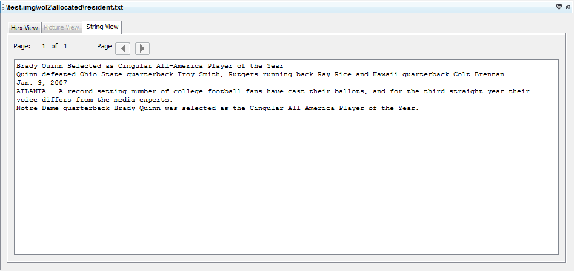

Strings Content Viewer just scans the data of the file / folder and show you it for printable ASCII strings of a default length of 4 or more ASCII characters. If the length of printable ASCII is less than 4, it won't show the string.
Here's one of the example of "String Content Viewer":
